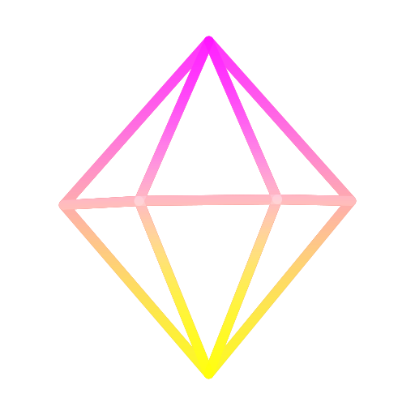
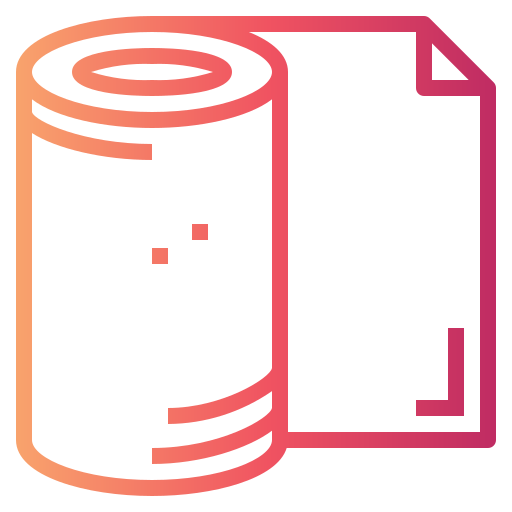
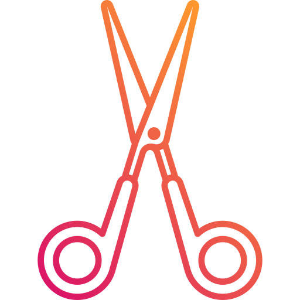

-

La pierre, brute et puissante, est la première à apparaître dans l'arène de combat. Sa force brute résonne dans les esprits et fait trembler les mains de ses adversaires. Elle est l'incarnation même de la stabilité, de la fermeté et de la force. Mais sous son apparence impénétrable, se cache une vulnérabilité cachée, un désir secret de se mouvoir, de s'élancer vers l'aventure et de briser les chaînes de son immobilité. Tel un roc solide dans l'océan tumultueux de la vie, elle symbolise la sécurité et la stabilité, mais elle ne peut rester immobile éternellement, elle aspire à se transformer, à se renouveler et à se réinventer. La pierre est un appel à la transformation, une invitation à embrasser la vie avec courage et à s'ouvrir à de nouvelles possibilités.
-

La feuille, oh comme elle est délicate et fragile, telle une feuille d'automne prête à s'envoler au moindre souffle de vent. Elle est l'équilibre entre la pierre robuste et le ciseau tranchant. Sa douceur apaise l'âme et sa légèreté émeut le cœur. Elle est le symbole de la nature, de sa beauté éphémère, de son renouveau perpétuel. Elle invite au calme et à la réflexion, à la contemplation de la simplicité qui peut mener à la victoire. La feuille, un objet banal en apparence, mais qui cache en son sein une profondeur insoupçonnée.
-

Ah, le ciseau, cet objet tranchant qui divise nos destins en deux. Entre tes doigts, il peut caresser la victoire, ou bien couper tes rêves en morceaux. Sa lame étincelante est la représentation de la chance et de la malchance, le symbole de l'équilibre précaire entre le succès et l'échec. Quand tu le brandis fièrement, tu te sens invincible, prêt à conquérir le monde entier. Mais quand il s'abat sur ta paume vide, c'est comme si tout s'effondrait autour de toi, comme si tu étais condamné à rester dans l'ombre pour toujours. Le ciseaux, un simple morceau de métal, mais qui contient toute l'essence de la vie elle-même.